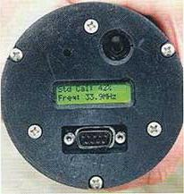
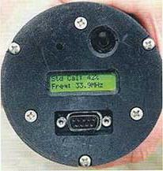

Time to Burn?
Peter R. Robichaud, Jim Bilskie
Prescribed fires increasingly are
being used to reduce hazardous fuels, a major objective of the National Fire
Plan. However, despite advancing technology and ever-improving models, determining
the best time for a prescribed burn is still a challenge.
After gathering data and applying models, the
fire manager may pick up a bit of duff, or organic material, squeeze it firmly
and check the moisture before giving approval to begin the burn. The fire manager
uses past experience, weather information and a "feel" for the current
conditions as a final check.
The effect of fire on the forest floor can vary
from merely removing the litter to totally consuming the duff, which exposes
the mineral soil and alters the surface soil structure. Fire managers often
design prescribed fires to leave a portion of residual duff material to protect
the mineral soil. Duff thickness and moisture content are the most important
factors in determining duff consumption during fires. Using a measured duff
moisture content in models like the
First Order Fire Effects Model
from the USDA Forest Service, fire managers can improve the estimate of duff remaining
after a burn.
Now there is an additional tool available. The
DMM600 duff moisture meter provides reliable, real-time measurements of duff
moisture content.
|
HOW
IT WORKS
In comparison to other woody fuels, duff moisture content has greater spatial
and temporal variation. Small precipitation events and heavy dew accumulations
that have negligible effect on the moisture content of large fuel can significantly
increase the moisture content of fine fuels and litter. Subsurface duff
can lose moisture through evaporation much more quickly than the large woody
fuels. Due to subtle differences in canopy closure, slope, aspect and micro-topography,
duff moisture levels can vary significantly across the landscape, even at
the hill slope scale. These variations make it important to use real-time
duff moisture measurements to estimate duff consumption and, more importantly,
desired post-fire duff depths. |
Basic field use.
The sample is collected from the portion of the duff layer just above the soil
mineral horizon and is pushed through a No. 4 mesh
sieve that fits in the opening of the sample chamber. Passing the duff through
the sieve breaks up large organic fragments and removes sticks and rocks to
allow for more uniform packing. Once the sieved material fills the chamber,
the cap is put on and the compression knob turned until an audible indicator
signals the sample is properly compressed. Upon proper compression, the instrument
automatically takes the measurement, which is immediately visible in the display
at the base of the instrument. Readings are displayed in real-time only; measurements
are not stored. Total time needed to sieve and measure each sample is about
30 seconds.
Operation
principles. The tough, lightweight DMM600 is a portable, battery-powered
sensor that was developed from frequency domain reflectometry technology, commonly
known as FDR. When proper pressure triggers a measurement, a high-frequency
signal of 42MHZ is applied to the wave guide at the base of the sample chamber,
and the sensor electronics detect the change in frequency of the reflected signal.
The frequency change depends on the dielectric constant of the medium adjacent
to the wave guide. Since the dielectric constant of the medium varies with moisture
content, the frequency change can be easily related, through a simple calibration
function, to provide a moisture content measurement. The unit's microprocessor
uses a factory-supplied calibration to convert the frequency to a volumetric
moisture content and displays the value in the LCD readout.
Air
voids in the organic material may reduce the apparent dielectric constant and/or
create a poor contact between the duff and the waveguide located at the base
of the sample chamber. Using the meter's compression feature on sieved duff
ensures each sample is pressed evenly against the wave guide, which reduces
measurement variability. An audible signal tells the user when correct compression,
15 pounds, is applied and the measurement is complete.
DMM600 meter accessories
- CD-ROM containing video instruction, PCDMM software, instruction manual and Excel spreadsheet for calibrations
- Softsided, padded carrying case with screwdriver and spare 9-volt battery
- 6-foot, 9-pin serial cable
|
|
Specifications
| Size: |
3-1/2 inch diameter
10 inch length |
| Weight: |
3.7 pounds |
| Sieve:
| No. 4 mesh, .203 inch
3-inch diameter |
| Battery: |
9-volt alkaline |
| Battery life: |
Over 2,000 uses |
| Accuracy: |
±5% for full-scale range |
| Resolution: |
1% volumetric
moisture content |
|
Calibration.
The factory-supplied calibration for the DMM600 is derived from laboratory measurements
of the volumetric moisture content of duff from eight different forested sites.
Given the elevation differences of these sites, the cover species varied to
include
spruce (Picea engelmannii),
alpine fir (Abies lasiocarpa),
lodgepole pine (Pinus contorta),
larch (Larix occidentalis),
ponderosa pine (Pinus ponderosa) and
Douglas-fir (Pseudotsuga menziesii).
Because the individual calibration curves were similar, the data were combined to develop
a single, standard calibration curve (see below.) The error bars indicate that
the measurement accuracy decreases as moisture content increases. The accuracy
is approximately ± 4% at 60% volumetric moisture content and approximately
±1.5% at 30% volumetric moisture content. It's recommended that the average
of samples from several nearby locations be used to reduce the effects of natural
variability.
The meter's response to changing moisture content is best described with a quadratic
calibration equation
Volumetric
moisture content = 5.288 + 5.905 (frequency) - 0.142 (frequency2)
where frequency is the DMM600 readout in megahertz. User-derived calibrations
can be determined using the laboratory procedures described in the DMM600
instruction manual and the DMM600 calibration Excel spreadsheet provided
in the PCDMM software package. User-defined calibrations are entered into
the PCDMM interface and loaded to the DMM600 through a serial port connection.
Studies done on eastern hardwood duff from Massachusetts show little deviation
from the standard calibration curve. It is likely that the standard calibration
curve will meet the needs of most fire managers across a range of vegetation
types. |
DMM600 standard calibration curve
The variability is smallest in the lower moisture/higher frequency area of the curve, where accuracy is most critical.
|
Volumetric versus gravimetric.
The basic operation of the DMM600 gives the volumetric moisture content of the sampled
duff. Using a simple calibration process, the gravimetric, dry weight-based
moisture content — the measurement most commonly used by fire managers
— can be added to the instrument readout.
A
value for duff bulk density is needed for this calibration process. Fire managers
may choose to use a known bulk density value or determine one from local conditions,
using the equation bulk density = dry weight/volume.
Each coefficient in the standard calibration equation is divided by the bulk
density.
The
three gravimetric coefficients are entered into the PCDMM software and uploaded
to the DMM600 via a serial port connection on the base. Because duff bulk density
is relatively constant, this calibration process can be completed prior to going
to the field to make duff moisture measurements. When each field measurement
is made, the standard volumetric moisture content and the user-defined gravimetric
moisture content are alternately displayed in the readout.
Duff moisture content is critical
information for fire managers making operational and planning decisions for
prescribed burns. The DMM600 duff moisture meter provides dependable duff moisture
content data in the field and for input in predictive modeling programs.
 

The portable electronic duff moisture meter provides duff moisture data in the field.
Peter R. Robichaud, Ph.D., P.E., is
a research engineer at the USDA Forest Service Rocky Mountain Research Station
in Moscow, Idaho. He can be reached at the Forestry Sciences Laboratory, Rocky
Mountain Research Station, 1221 S. Main St., Moscow, Idaho 83843; 208-883-2349;
e-mail: probichaud@fs.fed.us.
Jim Bilskie, Ph.D., is the soil physicist
at Campbell Scientific Inc., Logan, Utah.
The use of trade or firm names in this publication is for reader information
and does not imply endorsement by the U.S. Department of Agriculture of any
product or service.
This manuscript was written and prepared
by a U.S. government employee on official time and therefore is in the public
domain and not subject to copyright.
Originally published as:
Robichaud, P.R.; Bilskie, J. 2003. Time To Burn? Wildfire, May/June 2003. International Association of Wildland Fire.